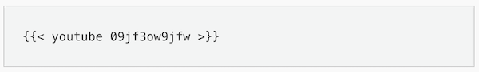

Programming, robotics, traveling
"markup": {
"goldmark": {
"renderer": {
"unsafe":true
}
}
}
или, если для конфига используется toml
[markup]
[markup.goldmark]
[markup.goldmark.renderer]
unsafe = true
Источники:
.thumb-wrap {
position: relative;
padding-bottom: 56.25%; /* задаёт высоту контейнера для 16:9 (если 4:3 — поставьте 75%) */
height: 0;
overflow: hidden;
}
.thumb-wrap iframe {
position: absolute;
top: 0;
left: 0;
width: 100%;
height: 100%;
border-width: 0;
outline-width: 0;
}
<div class="thumb-wrap">
<iframe width="560" height="315" src="https://www.youtube.com/embed/Y421bWMelqE" frameborder="0" allowfullscreen></iframe>
</div>
Источник:
Также это может быть сделано с помощью встроенно Shortcut

Источник: